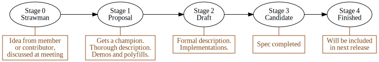
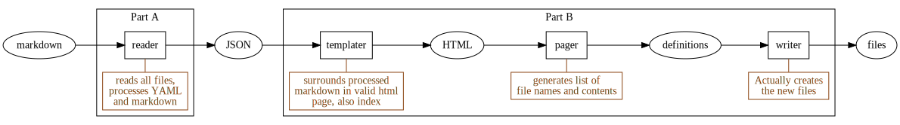
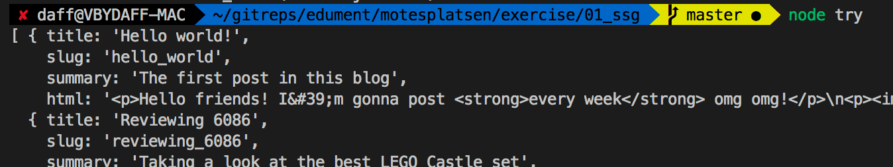
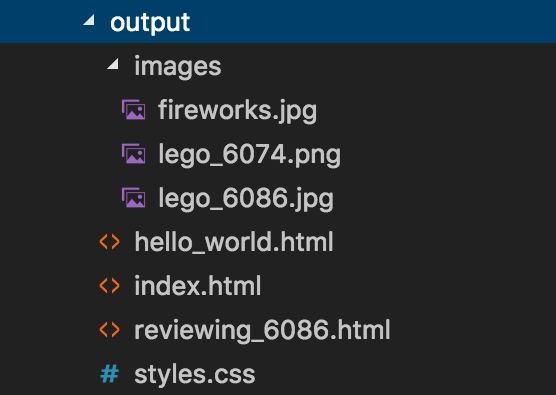
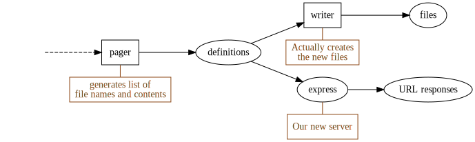

Node & Firebase
Mötesplatsen is on fire
Course overview
1. Welcome
- Welcome
- Course structure
- Masterplan
2. Baseline
- ECMAScript
- Functional programming
- Map and reduce
- Promises
- Asynchronous functions
3. Node, npm and Express
- NodeJS
- npm
- File juggling
- Exercise - SSG part A
- Exercise - SSG part B
- Express
- Exercise - server
4. Appendix: ES2015
- Versatile object definitions
- Destructuring and rest
- Versatile function definitions
- Spreads
- Modules
- Classes
- Miscellaneous
Welcome
Setting the scene
Before we begin - Alan says hi and thanx!
...and I want to thank you (Varbeg) for this:
Sections in this chapter:
- 1. Welcome
- 2. Course structure
- 3. Masterplan
1-1. Welcome
...to the jungle?
Hello Mötesplatsen! :)

Meet Carl!
Also, fair warning - We spend our days singing this gospel:

1-2. Course structure
How we'll go about things
The material is divided into several chapters, where you're currently in the first.
We access the chapters from an index, giving you a birds-eye view of the entire contents.
Each chapter has many sections:
In the printed material (or PDF) and in the presentation top-right corner, the slides are numbered X‑Y‑Z where...
Xis the number of the current chapterYis the number of the section section within that chapterZis the number of the slide within that section
1-3. Masterplan
Tajmad och klar
Also;
- Focus on overview and the hard-to-grasp
- Practical moments spliced in
- There are no stupid questions! only stupid people
Baseline
common ground
Sections in this chapter:
- 1. ECMAScript
- 2. Functional programming
- 3. Map and reduce
- 4. Promises
- 5. Asynchronous functions
2-1. ECMAScript
JS vocabulary
The ECMASCript versions:

The TC39 process:

Current proposal count (as of 2018-11-07):

There's a (crude) proposal overview at https://es‑overview.netlify.com/.
2-2. Functional programming
Jumping down the rabbit hole
JavaScript is (almost) a functional language, which modern JS developers make frequent use of.
We'll now walk through a quick example to make sure we understand the power of this paradigm!
So - since functions are first class citizens, we can send them around just like any value.
Which also means that a function can take, and/or return, other functions! Such a function is called a higher order function.
As a contrived example, say we have this function:
let spam = function() {
console.log("SPAM!");
};
And then we have this higher order function:
function repeater(func, times) {
for (let i = 0; i < times; i = i + 1) {
func();
}
}
If we invoke repeater like this:
repeater(spam, 3);
We would see this in the console:
"SPAM!"
"SPAM!"
"SPAM!"
To show we can also return new functions, take a look at this beauty:
function multiplier(func, times) {
return function() {
for (let i = 0; i < times; i = i + 1) {
func();
}
};
}
Did you see the difference? multiplier doesn't execute the parameter function, but returns a new function!
let tripleSpam = multiplier(spam, 3);
If we execute the returned function we get the triple spam:
tripleSpam(); // SPAM! SPAM! SPAM!
Functional programming is a really powerful tool, and something that is likely to get you hooked once you have learned it. We warmly encourage you to explore the subject!
2-3. Map and reduce
the functional cornerstones
For applied functional programming, there are two list-operating tools that have a very central position:
- aThe
mapmethod - bThe
reducemethod
Let's take a look at both of these!
First, map. It takes a list and an iterator function as arguments, and returns a new list.
The iterator function that we pass in is called with each element and the index of that element, and it should return a new element to be used instead:
Here's an example. What will this call return?
let list = ["David", "Carl", "Eric"];
let newList = list.map(function(elem) {
return elem + "y Mc" + elem + "face";
});
Yup, newList will now equal this:
["Davidy McDavidface", "Carly McCarlFace", "Ericy McEricface"];
In essence, .map will create a new list of the same length, where each element is individually transformed by the iterator.
Now for .reduce! It is more powerful, but also harder to grasp.
Similar to .map it takes a list and an iterator, but also a seed value. Unlike .map it doesn't necessarily return a list, instead it can return any value.
The iterator function is called with each element and the current value (sometimes called memory or accumulator), and returns a new value.
The seed that we passed in to .reduce is used as the current value for the first iterator call.
The result of the .reduce call is whatever is returned from the last iterator call.
In other words, it looks like this (for a 3-item list):
Here's a classic example - what is something?
let list = [{ name: "shovel", price: 27 }, { name: "bucket", price: 14 }];
let something = list.reduce(function(mem, elem) {
return mem + elem.price;
}, 0);
let something = list.reduce(function(mem, elem) {
return mem + elem.price
}, 0);
We get the total cost of the items.
A somewhat tougher example, with more modern syntax:
let words = ["Bucket", "Pipe", "Flower"];
let something = words.reduce((mem, elem) => ({
...mem,
[elem.length]: (mem[elem.length] || 0) + 1
}), {});
It returns an object which counts how many words of each length the list contains:
{
4: 1,
6: 2
}
2-4. Promises
Give me your word!
In JS we usually deal with asynchronisity via callbacks:
const bigRedBtn = document.getElementById("doomsdayBtn");
const clickHandler = e => alert("BOOM");
bigRedBtn.addEventListener("click", clickHandler); // <--- callback!
A callback is simply a function that will (potentially) call back at some point in the future.
Sometimes we need to call back with success or failure. NodeJS popularised the following pattern:
const fileHandler = (err, buffer) => {
if (err) {
throw new Error("OH NO :/ " + err);
}
console.log("file contents: ", buffer.toString());
};
fs.readFile(filepath, fileHandler);
A Promises is an alternative solution to handling future success/failure.
Instead of taking a callback, an async operation can syncronously return a promise that will eventually resolve or reject.
This translates to the following state transition:
The user...
- synchronously gets the promise
- attaches callbacks for success and/or failure.
So instead of this...
readFile(path, (err, data) => {
if (err) handleError(err);
else handleData(data));
}
...we do this...
const promise = readFile(path);
promise.then(handleData);
promise.catch(handleError);
...or simply chain it like this:
readFile(path)
.then(handleData)
.catch(handleError);
So a whole complicated abstraction just to save a few characters?!
Yes.
But more complex asynchronous flow control patterns can become much easier with promises.
For example, parallellising:
let data = {};
const maybeFinalize = (resp, which) => {
data[which] = resp;
if (data.A && data.B && data.C) {
finalize(data.A, data, B, data.C);
}
};
fetch(urlA, resp => maybeFinalize(resp, "A"));
fetch(urlB, resp => maybeFinalize(resp, "A"));
fetch(urlC, resp => maybeFinalize(resp, "A"));
With promises that could become:
Promise.all([fetch(urlA), fetch(urlB), fetch(urlC)]).then(finalize);
Promises are created like this:
const promise = new Promise((resolve, reject) => {
setTimeout(() => {
resolve("3 seconds have passed!");
}, 3000);
});
Note that you rarely need to do that.
Mostly we'll just use API:s that return promises.
bigRedBtn.addEventListener("click", clickHandler);
But, when a callback can be called more than once, like a clickhandler...
...then promises doesn't make sense?
Indeed not! The promise can only represent a single asynchronous value.
To represent many async values we can use a stream:
But that's a totally different story!
Finally, you should know that promises are contested.
Read more in the Broken promises blogpost.
2-5. Asynchronous functions
Async await
When we deal with more than one promise, things quickly get hairy:
function getInvocationOdds() {
return fetch("/api/alignedPlanet").then(planetId => {
return fetch(`/api/planetFavourability/${planetId}`).then(favourability => {
return favourability * 100;
});
});
}
Using async functions, this can be rewritten as:
async function getInvocationOdds() {
const planetId = await fetch("/api/alignedPlanet");
const favourability = await fetch(`/api/planetFavourability/${planetId}`);
return favourability * 100;
}
An async function...
- is defined with the
asyncprefix - lets you wait for promises with
yield - returns a promise
In other words, they let us write asynch code more neatly.
More newish features can be found in the ES2015 appendix.
Node, npm and Express
The three musketeers
Sections in this chapter:
- 1. NodeJS
- 2. npm
- 3. File juggling
- 4. Exercise - SSG part A
- 5. Exercise - SSG part B
- 6. Express
- 7. Exercise - server
3-1. NodeJS
It's JavaScript, Jim, but not as we know it
Node (or Node.js) is a JavaScript runtime. It can do two things:
- REPL (type
nodein terminal) - Execute file (type
node path/to/file)
Node runs off of the v8 runtime, which also powers the Chrome family of browsers.
When Node was first released, its biggest innovation was its asynchronous API:
Almost any API function you called returned immediately and then did its work asynchronously.
Over the past decade, three major ways to work with asynchronous operations have evolved, each better than the one before:
- Callback functions (used by Node's API)
- Promises (new API in ES2015)
async/await(new syntax in ES2017)
In node, each file is a module. We can import...
- exports from other files in our source
- build in Node modules (
fs,path, ...) - third party code from npm
Here's the (almost) full resolution logic:
Just like the browser adds a bunch of stuff on top of JS...
document.someDOMrelatedMethod...
...so does Node!
You'll find the documentation for these here...
...and some more readable guides here:
What ECMASCript version runs in Node?
Excellent question! It of course depends, but:
3-2. npm
It literally stands for "npm"!
Bundled with node is the Node Package Manager, or npm for
short. npm can be used to:
- Initialize projects
- Install dependencies
- Run scripts
As of this writing, npm hosts over 800,000 modules.
Let's build a project
The problem domain
To have something concrete to work with, we'll pick a web application to build.
We'll build a site that lists various offers and lets you buy one or more of them:
We won't dive into the details right now, but let's initialize a new project:
$ mkdir node-app && cd node-app
$ npm init
# ... Fill everything out
What just happened?
Turns out we now have a package.json in our folder, with the following content:
{
"name": "BuyStuff",
"version": "1.0.0",
"description": "Project description",
"main": "index.js",
"dependencies": {},
"devDependencies": {},
"scripts": {
"test": "echo \"We have no tests yet\""
},
"author": "David Waller",
"license": "ISC"
}
We'll also need dependencies. While we COULD download them, put them
somewhere and require them, we're going to install it automatically
instead.
Let's install the express framework (which we'll deep-dive into today)
$ npm install express
Now express is added to our dependency list in package.json!
{
"dependencies": {
"express": "^4.15.3"
},
"devDependencies": {},
"scripts": {
"test": "echo \"We have no tests yet\""
}
}(in older versions of npm we had to install with a --save flag for this to happen)
Where are the downloaded dependencies stored?
In a folder called node_modules. You'll want to ignore this one in
your CVS, but keep package.json committed.
There's also the concept of dev dependencies, used during development only.
For instance, we'll use babel in the upcoming module to compile our
code. Babel is not needed in deployment:
$ npm install --save-dev babel-cli
These are stored in the same folder as regular dependencies.
{
"dependencies": {
"express": "^4.15.3"
},
"devDependencies": {
"babel-cli": "^6.24.1"
},
"scripts": {
"test": "echo \"We have no tests yet\""
}
}In a production environment, you'd most likely want to run the following:
$ npm install --production
This grabs all regular dependencies (but not the dev ones) and downloads them.
sidenote - semantic versioning
npm uses Semantic versioning (also called semver)
A "version" is described as a string, such as 1.2.3, where:
1 - MAJOR (incompatible API changes)
2 - MINOR (new functionality, backwards compatible)
3 - PATCH (patches and bugfixes)
In your package.json (and also when installing, you can specify a
semver, together with one of several comparators. A few common examples
include:
>=1.2.3 # Anything greater than or equal to this version
=1.2.3 # Exactly this version
^1.2.3 # Keep on the same major version
# (1.3.0 OK, but not 2.0.0)
~1.2.3 # Keep on the same minor version
# (1.2.4 OK, but not 1.3.0)
There's a giant heap of these. Check the following URL for the spec:
Adding a script
Runnable scripts can be added as a json property in package.json
{
"dependencies": {},
"devDependencies": {},
"scripts": {
"printme": "echo \"This is a meaningless script\""
}
}
Running scripts
npm uses a command called run:
npm run printme
This just runs our pointless command that we defined in printme
Let's make a more useful example
Adding a test script to package.json instead:
{
"dependencies": {},
"devDependencies": {
"mocha": "^3.1.2",
"babel-cli": "^6.18.0",
"babel-preset-es2015": "^6.18.0",
},
"scripts": {
"test": "mocha --compilers js:babel-core/register"
}
}This script will by convenience look for a folder named test and run all the test files.
Running the test script
npm run test
or
npm test
The later is a shortcut provided by npm. You can name a script to
whatever you want but this shortcut only works for test and start.
3-3. File juggling
3 useful 3rd party modules
Let's make three new friends!
- aMore file methods with fs-extra
- bMarkdown support with marked
- cYAML file metadata with front-matter
First, fs-extra! It is...
- a drop-in replacement for
fs - with some extra features added
So instead of doing...
const fs = require("fs");
...you'd do this...
const fs = require("fs-extra");
...and now you can do this!
fs.removeSync(pathTodirOrFile); // example of added method
Markdown is a popular shorthand format for writing HTML.
For example, this...
## Lego set 6086
The [6086 castle](https://brickset.com/sets/6086-1) is ** totally awesome**!
...is equivalent to this:
<h2>Lego set 6086</h2>
<p>
The <a href="https://brickset.com/sets/6086-1">6086 castle</a> is
<strong>totally awesome</strong>!
</p>
In other words we need a Markdown compiler...
...and a very good one is marked.
We can use Marked as a command-line tool...
marked -i source.md -o dest.html
...or from node:
const fs = require('fs-extra');
const mdParser = require('marked').setOptions(...);
const input = fs.readFileSync('./source.md').toString();
const markdown = mdParser(input);
fs.writeFile('./dest.html', markdown);
Finally, front-matter!
So. When dealing with content files, it is common to want to associate metadata.
For example, in a blog post file, we might want to list...
- author id
- post slug (html path)
- associated tags
...etc.
Using YAML syntax, this might look like this:
---
authorId: david
title: "Using Firebase in React"
tags: JS, Firebase, React
summary: "Showing off Firebase in a React app"
---
# How to use Firebase in React
Hello! Today we'll take a look at how to bla bla
...etc etc, full post content follows here
When dealing with such files, we need a method that separates the YAML data from the body:
...and this, of course, is exactly what the front-matter module lets us do:
const fs = require("fs-extra");
const rawPostFile = fs.readFileSync("./post.md").toString();
const fm = require("front-matter");
const blogPost = fm(rawPostFile);
const content = blogPost.body; // everything below the YAML
const attributes = blogPost.attributes; // obj with all medata
Of course, together with marked, a natural next step would be to process the body:
const html = mdParser(blogPost.body);
3-4. Exercise - SSG part A
Who needs a DB anyway?
A hot trend today is to replace DB-driven sites by static site generators.
Every time a new source file is added, we regenerate the site!
There are many steps to the generating:
So many, that we start with just the reader:

Here's the plan:
- aSet up project
- bSet up static resources
- cCreate post source files
- dCreate data reader
It is quite a long journey, but for this one you'll get detailed instructions.
Try to take one step at a time!
First we set up the project!
- create a new folder called
ssg - navigate to it in a terminal
- execute
npm initand go through the questions - add our dependencies:
npm install --save-dev front-matter marked fs-extra
Now for our static resources!
/static
styles.css
/images
nicepic.png
anotherpic.jpg
For now just add in an empty style sheet and some images that you want to include in your blog posts.
Now create a directory /posts with two or three markdown files.
/posts
my_first_post.md
another_post.md
a_third_post.md
These are our post source files, that we eventually want to turn to HTML.
Each post file should have YAML frontmatter containing...
- slug (will be the URL)
- title
- summary
...and a markdown body.
Something like this:
---
slug: hello_dear_world
title: My first post
summary: "The inaugural hello world post!"
---
Greetings **world**! My name yada blah ...
If you want to reference an image in a post, the markdown shorthand is:

In other words, use a relative path as if you were inside the static folder.
Add a folder generate with a getData.js file:
/generate
getData.js
This file will house logic for reading the post source files.
It should export a single method that returns the data:
// inside of /generate/getData.js
module.exports = function() {
// Loop through all files inside "../posts",
// and return an array of objects, one per
// post. These objects should contain
// processed YAML and markdown.
return posts;
};
The exact shape of the post objects is up to you!
You will need to use the file API...
const fs = require("fs"); // build in file methods
...to find all file names in a folder...
fs.readdirSync(sourcePath); // array of file names
...and read a single file:
fs.readFileSync(filePath).toString();
How do we test the getData function? One way:
- Create a
try.jsfile in the root - Inside that file, add
const getData = require("./generate/getData"); const posts = getData(); console.log("Parsed posts", posts); - Execute
node tryin the terminal
Once you see the correct data logged out, you're done!

3-5. Exercise - SSG part B
Almost there!
Time for step B!
In other words, we need to
- aMake templates
- bMake a page getter
- cMake a writer
First, some templating functionality! We want to make blog pages and also a list to use as index:
So we'll need two different templates.
Make that three, since we also want a master template!
We'll implement them using ES2015 template literals - see the "misc" section in the ES2015 Appendix if they're not familiar!
Add a /templates dir inside /generate, containing three files:
/generate
/templates
master.js
post.js
list.js
The master.js should be something like this:
module.exports = function(title, content) {
return `
<!DOCTYPE html>
<html lang="en">
<head>
...
</head>
<body>
...
</body>
</html>`;
};
The <head> part should set the title and reference the stylesheet:
<meta charset="UTF-8">
<title>${title}</title>
<link rel="stylesheet" href="styles.css">
And in the <body> we simply show the content:
<div>
<h1>My awesome blog</h1>
<hr/>
<h2>${title}</h2>
<main>${content}</main>
</div>
The post.js file should template the page for a single post:
const master = require("./master");
module.exports = function(post) {
return master(post.title, post.html);
};
It will simply pass the processed markdown content to the master template.
In list.js we template the front page listing all posts:
const master = require("./master");
module.exports = function(posts) {
let listOfPosts = ...; // build a <ul> with a <li> per post
return master("My awesome blog", listOfPosts);
}
Each <li> should be something like this:
let htmlForPost = `
<li>
<a href="${post.slug}.html>
${post.title}
</a>
<p>${post.summary}</p>
</li>
`;
To test your templates, simply edit try.js:
const getData = require("./generate/getData");
const posts = getData(); // <--- that we make in part A
const list = require("./generate/templates/list");
const post = require("./generate/templates/post");
console.log("A templated post", post(posts[0]));
console.log("The index", list(posts));
Now we need to make the getPages function!
/generate
getPages.js
It should use getData and the templates to return an array of page definitions like this:
[
["index", "<ul><li>..."],
["hello_world", "<p>So this is my first post! ..."],
["review_6086", "<p>In this post I review 6086 ..."],
...
]
In other words, each page definition is [slug,processedMarkdown].
To test it, edit try.js again:
const getPages = require("./generate/getPages");
const pageDefinitions = getPages();
console.log("Page definitions", pageDefinitions);
Finally, time to add a writer file that actually does some work!
/generate
index.js
This file will generate the blog into /output!
It needs to:
- remove previous
/output - copy
/staticto/output - write an html file per entry in
getPages()
Finally, we're done!
You can now remove try.js, and instead test the command by doing
node generate
(this will execute ./generate/index.js)
...and an output folder with static files and html files should appear!

However, it is customary to add "app-level commands" such as the writer file to npm scripts, so let's do that!
In package.json:
{
// other stuff truncated
"scripts": {
"generate": "node generate"
}
}
Now the user can create the site by typing
npm run generate
To see the generated site in a browser, either..
- double-click a .html-file to open it over the
file:///protocol - ...or serve the
/outputfolder to localhost via a web server
(for the latter, try the Live Server extension to VSC)
3-6. Express
Of the expressionist school
Express allows us to work with routes as well as static content. In this first module, we'll start by looking at serving static content, and then move onto setting up a router.
We have a simple front-end, that we currently serve as static files from Express - let's take a look at the source.
Our server can be started with npm start, and the application can
be reached on localhost:8080
First of all, we're initiating the application as such:
import express from 'express';
let app = express();
The imported express module returns a function that you can call,
which returns a new Express.js application.
In this case, we set up a static route, using:
import express from 'express';
let app = express();
app.use(express.static('frontend'));
app.listen(8080, function () {
console.log('Listening on port 8080')
});
Static files are mapped as a route. In fact, the following:
app.use(express.static('frontend'));
... Is short for:
app.use('/', express.static('frontend'));
Another common pattern is to map static files under a certain route. This also means that you can map several routes for different folders:
app.use('/static/images', express.static('frontend/images'));
app.use('/static/docs', express.static('lib/docs'));
Or more commonly (and safer), using the absolute path:
app.use('/static/images', path.join(__dirname, 'frontend', 'images'));
app.use('/static/docs', path.join(__dirname, 'lib', 'docs'));
Static routes are great for static content - but what about dynamic pages?
Routes are at the heart of an Express application, and we can set up more than just static ones.
In this course, we'll start by looking at some simple templating using Handlebars.
Handlebars is an extension to the Mustache templating language. It lets you write nifty templates such as:
<h1>{{title}}</h1>
<div>{{description}}</div>
In order to install Handlebars:
$ npm install --save handlebars
Before we start using Handlebars, let's setup a new Express route. A
typical HTTP GET route looks like this:
app.get('/my-route', (req, res) => {
// ...
});
The name of the function (get) is the HTTP verb. Similarly, there are
functions for POST, PUT, DELETE and so on.
The first parameter is the route mapping, and the second parameter is the handler:
app.get('/my-route', (req, res) => {
// ...
});
The handler has parameters for request and response.
In order to actually return something, we can call send:
app.get('/my-route', (req, res) => {
res.send('Hello world');
});
We can easily switch this to return a compiled template using Handlebars instead:
import handlebars from 'handlebars';
// ...
app.get('/my-route', (req, res) => {
// Compile a template from a string:
let template = handlebars.compile("<h1>{{greeting}}</h1>");
// Link the template to a context and send it back:
res.send(template({greeting: "HELLO WORLD"}));
});
While our last example did in fact work, we'd like to read our templates from files, rather than using hard-coded strings.
What we'll do in this module is:
- Write a new module to allow for simple parsing from files
- Setup routes for a couple of templates for a frontend and link them with some data
Let's start by building a simple get route again:
app.get('/', (req, res) => {
// ...
});
Let's assume that we have a module that allows us to compile and link Handlebars templates, like this:
import templates from './templates';
// ...
app.get('/', (req, res) => {
templates.link('src/templates/index.hbt', {
some: 'value'
}, (err, data) => {
if (err) {
res.status(500).send(err);
}
res.send(data);
});
});
Note that this needs to be asynchronous since we'd be blocking on file reads otherwise!
In this module, we'll stub the link call in the following way:
// templates.js
export default {
link: function (template, context, callback) {
fs.readFile(template, 'utf-8', (err, data) => {
// File is HOPEFULLY read here
});
}
};
Remember, the Node.js convention is based on callbacks:
export default {
link: function (template, context, callback) {
fs.readFile(template, 'utf-8', (err, data) => {
if (err) {
/* Something went wrong */
} else {
/* We're good */
}
});
}
};
Handling potential errors and invoking the callback gives us:
export default {
link: function (template, context, callback) {
fs.readFile(template, 'utf-8', (err, data) => {
if (err) {
callback(err, undefined)
} else {
try {
let compiled = handlebars.compile(data);
callback(undefined, compiled(context));
} catch (e) {
callback(e, undefined);
}
}
});
}
};
We should be able to use our module, and link some static data:
app.get('/', (req, res) => {
templates.link('src/templates/index.hbt', {
items: [
{
image: "http://lorempixel.com/400/200/",
title: "Drink whisky with friends",
tags: ["whisky", "friends", "drink"]
},
{
image: "http://lorempixel.com/400/203/",
title: "Visit giraffes in the park",
tags: ["giraffes", "park", "animals"]
}
]
}, (err, data) => { /* Abbreviated */ });
});
What about the index.hbt file?
The interesting template pieces:
{{#each items}}
<div class="col-sm-6 col-md-4">
<div class="thumbnail item">
<a href="#"><img src="{{this.image}}" width="400"
height="200" alt="..."></a>
<div class="caption">
<span><a href="#">{{this.title}}</a></span>
</div>
</div>
</div>
{{/each}}This works, but we don't exactly have a clean interface between application data and logic right now.
In order to make some logical separation of concerns, we'll move the static data into a module
We'll hook this up to a real database later in the course
We know that database access is going to be asynchronous, so we'll keep this in mind for the new module:
// store.js
export default class Store {
allOffers(callback) {
callback(undefined, [
{
image: "http://lorempixel.com/400/200/",
title: "Drink whisky with friends",
tags: ["whisky", "friends", "drink"]
},
// ... More static data here
])
}
}
Using it is easy (albeit a bit ugly):
import Store from './store';
app.get('/', (req, res) => {
let s = new Store();
s.allOffers((err, items) => {
if (err) { res.status(500).send(err); }
template.link('src/templates/index.hbt', { items },
(err, data) => {
if (err) {
res.status(500).send(err);
}
res.send(data);
});
});
});
The problem with asynchronous code structures in Node.js is already becoming apparent.
3-7. Exercise - server
Express delivery!
Let's serve our generated site from an Express backend!
(this won't give us any advantages, we do it just to try out express)
(And don't worry - this is nowhere near as complex as the last exercise)
(in fact, nothing else will be)
Add a folder /server and a file index.js:
/server
index.js
In that file we need to create an express app that...
- ahas a route per page definition
- bserves the files in
static... - cis available on a localhost port
Remember how you mumbled to your friend that the last exercise was split into too many steps?
Well, we can now repurpose the getPages function!

In other words we'll be using the pages definitions again...
const getPages = require("../generate/getPages");
const pages = getPages();
...and for each of them we must set a route:
app.get("/" + fileName, (req, res) => res.send(fileContent));
(you'll also want to set an additional route for /, serving the same thing as /index.html)
Regarding serving the /static files - snoop at the previous section on how to use express.static!
Finally, make your server .listen to a port of your choosing!
You should also log out a message in the console with the port number
Now you can try your server by doing...
node server
...which runs /server/index.js!
But, just like with generate, you should also set up an npm script to start the server!
Appendix: ES2015
The new shinies
In this appendix chapter we will more fully explore the new features in ES2015!
Sections in this chapter:
- 1. Versatile object definitions
- 2. Destructuring and rest
- 3. Versatile function definitions
- 4. Spreads
- 5. Modules
- 6. Classes
- 7. Miscellaneous
4-1. Versatile object definitions
defining objects like a boss
In ES2015 we got five small but nice features for defining objects in a smoother way:
- adynamic keys
- bautomatic same-key-value
- cmethod shorthand
- dgetters
- esetters
If we wanted to create an object with a dynamic key we had to go about it in a roundabout way before:
let obj = {};
let obj[dynamicKey] = someValue;
Now, instead, we can use the dynamic key syntax by wrapping it in brackets:
let obj = { [dynamicKey]: someValue };
Also, if our value is in a variable with the same name as the intended key, like here:
let person = {
name: name,
age: age
};
...ES2015 introduces a shorthand syntax:
let person = { name, age };
And if we define an object with a method:
let obj = {
method: function(arg1, arg2) {
// do advanced stuff
}
};
...ES2015 lets us be less verbose by using the method shorthand syntax:
let obj = {
method(arg1, arg2) {
// do advanced stuff
}
};
This can also be combined with the dynamic key syntax:
let obj = {
[methodName](arg1, arg2) {
// do advanced stuff
}
};
Finally, ES2015 also introduced getters and setters.
Let's look at getters first. They are very useful for dealing with computed properties.
Say we're working with user objects like this:
let user = {
firstName: "John",
lastName: "Doe"
};
Now we want to implement a computed property fullName.
Here's an ES3 solution doing it as a method:
let user = {
firstName: "John",
lastName: "Doe",
fullName: function() {
return this.firstName + " " + this.lastName;
}
};
user.fullName(); // John Doe
By using an ES2015 getter we can access the computed property normally instead:
let user = {
firstName: "John",
lastName: "Doe",
get fullName() {
return this.firstName + " " + this.lastName;
}
};
user.fullName; // John Doe, without invocation!
A setter let's you act upon prop mutation, for example logging...
let user = {
set userName(str) {
log(this._userName + " changed name to " + str);
this._userName = str;
}
};
user.userName = "Steve"; // Bob changed name to Steve
...or validation:
let user = {
set userName(str) {
if (str.match(/[^a-z]/)) {
throw "Name can only contain lowercase letters!";
}
this._userName = str;
}
};
user.userName = "Bob the 1 and only"; // Name can only contain..
question)
Did you note that we used a **different property name** inside the setter? The setter was for `userName`, but inside it we instead set `_userName`.
Why do you think that is?
answer)
If we mutated the same property inside the setter then that would trigger the setter to be called, which would mutate the property, which would trigger the setter, etc. We would end up in an infinite loop.
4-2. Destructuring and rest
cherry-picking the raisins from the cookie
Destructuring is a way to pick values from nested structures without having to do the manual digging.
Let's say we have an array of contenders, each represented by an object.
let contenders = [
{ name: "David", age: 39 },
{ name: "Carl", age: 37 }
/* and a few others */
];
They are sorted by position so the first contender won, etc.
If we wanted the name of the winner we would do something like this in ES5:
let winnersName = contenders[0].name;
With destructuring, we can instead do this:
let [{ name: winnersName }] = contenders;
Or, combined with the same-key-value shorthand:
let [{ name }] = contenders;
Destructuring also allows us to use the powerful rest element which can lump up many array elements into one, making for some very succinct code:
let [winner, ...losers] = contenders;
Note that the rest element has to be the last one in the array, so this wouldn't work:
let [...others, superloser] = contenders; // syntax error
Wait.. Theoretically, the rest could be placed anywhere, as long as there's just one. The parser should still be able to figure out what's what!
Right?
True. But that would require lookahead, which is complex and more taxing. And so the choice was made to only allow the rest element in the last position.
4-3. Versatile function definitions
defining function like a boss
ES2015 provides several neat features for defining functions:
- adefault parameter values
- brest parameters
- cdestructuring parameters
- darrow functions
Default parameter values exist in many languages, and was popularised in JS through CoffeeScript.
The idea is to handle optional parameters in a smoother way.
Creating a function with an optional parameter in ES3 meant we had to do a sometimes tedious dance of initialization:
function makePerson(name, age) {
let age = age || "unknown";
// do complex stuff
}
This may or may not do what you want. (Hint: is 0 a reasonable value for age?)
With default parameter values we can instead do this:
function makePerson(name, age = "unknown") {
// do complex stuff
}
The second new feature, rest parameters, is a way of capturing multiple arguments into a single variable like a rest element in a destructuring.
This can often save us from having to do awkward stuff with the not-quite-an-array arguments object.
Imagine a competition function that is called with all contenders one by one:
function competition() {
let contenders = Array.prototype.slice.call(arguments);
let winner = contenders[0];
let losers = contenders.slice(1);
// do something with winner and losers
}
Using rest parameters, this function simply becomes:
function competition(winner, ...losers) {
// do something with winner and losers
}
Note that the rest parameter has to be the last parameter, just like the rest element, and for the same reason.
Remember destructuring? We can use that in signatures:
function introduce({ name, age }) {
console.log(name, "is", age, "years old");
}
let me = { name: "David", age: 39 };
introduce(me); // David is 39 years old
Finally - know how defining anonymous functions in JS is rather verbose?
let mcboatify = function(arg) {
return arg + "y Mc" + arg + "Face";
};
With arrow functions things feel less heavy:
let mcboatify = arg => {
return arg + "y Mc" + arg + "Face";
};
They can become smaller still - if we have exactly one parameter, we can omit the parenthesis in the signature:
let mcboatify = arg => {
return arg + "y Mc" + arg + "Face";
};
Finally, if you just want to return an expression, we can skip brackets and the return keyword:
let mcboatify = arg => arg + "y Mc" + arg + "Face";
Now the function body consists of a single expression, which will be implicitly returned.
Note however that if you want to use the single expression form with an object literal, we have to wrap it in parenthesis to distinguish it from a regular function block:
let createUser = (name, age) => ({ name, age });
Arrow functions are not only less heavy to write, they are also lighter for the interpreter since they don't get an implicit context parameter.
Which means that if you refer to this inside an arrow function, it is the same this as on the outside.
let me = this;
setTimeout(() => {
console.log(this === me); // true
}, 10);
setTimeout(function() {
console.log(this === me); // false
}, 10);
As a final note; arrow functions can beautifully describe the flow for nested higher order callbacks. For example, this...
function multiplier(func, times) {
return function() {
for (let i = 0; i < times; i = i + 1) {
func();
}
};
}
...could be written as this:
let multiplier = (func, times) => () => {
for (let i = 0; i < times; i = i + 1) {
func();
}
};
4-4. Spreads
the dark side of rests
You have already seen how we use rest element/parameter to capture several array elements into a single variable:
let [winner, ...losers] = competitors;
Now imagine the opposite scenario - we have the winner and losers variables, and want to define competitors. In ES3 this is done like this:
let competitors = [winner].concat(losers);
ES2015 gives us a new options - spreads! It looks exactly like rest, but we use it on the right side instead (or when we call a function as opposed to when we define it):
let competitors = [winner, ...losers];
We say that we spread the contents of the expression into the outer array.
Spreads gives us a less verbose way to copy an object and add properties to it, which is otherwise done like this:
let augmentedObj = Object.assign({}, oldObj, newProps);
With spreads we can instead do this:
let augmentedObj = { ...oldObj, ...newProps };
Note that while spreads and rests with arrays are in the spec for ES2015, object spread came in ES2018.
4-5. Modules
getting into the import/export business
As we saw earlier, Node gave us modules through the require and module.exports globals it provides.
But with ES2015, we got native modules for the very first time!
While **Node modules** followed the **CommonJS module standard**, what was implemented in the language follows **another syntax**, named **ES modules**.
But the **concepts are the same**. While you would do this in **CommonJS**...
```javascript
// file1.js
module.exports = {..};
//file2.js
let lib = require("./file1.js");
```
...you would do this with ES modules:
// file1.js
export const lib = {..};
//file2.js
import lib from './file1.js'
We have to name our exports here, otherwise things are pretty similar.
There are **other differences too**, so for the full scope you should **check the MDN docs** for [import](https://developer.mozilla.org/en-US/docs/Web/JavaScript/Reference/Statements/import) and [export](https://developer.mozilla.org/en-US/docs/Web/JavaScript/Reference/Statements/export)
Note that even though this is now part of the language, there are no browsers that implement the functionality yet.
This is mainly because it wouldn't be practical - we'd get a gazillion http requests for small files.
And since we **likely have a build step anyway** to do minification and transpiling and similar, you can easily **bundle your code into a single file**, too.
But, with the advent of HTTP2, **who knows what the future will hold**!
4-6. Classes
Waiter, there are classes in my JS!
Before ES2015, JavaScript used to famously lack classes.
This was not an oversight. Consider what classes are normally used for:
- resusing functionality and
- setting up hierarchies
In JavaScript this is addressed by
- simply grabbing methods and/or mixing objects
- prototypal "inheritance", which should really be called delegation
This means that classes didn't really serve a purpose. Yet they were still frequently used, through the weird, bolted-on new syntax which makes functions behave like constructors:
let user = new User("David", 1979);
But to really make this behave like normal classes...
let lucas = new Dog("Lucas");
lucas instanceOf Dog; // true
lucas instanceOf Animal; // true
lucas.bark(); // Lucas goes woof!
...then lots of jumping through hoops had to be done:
Dog.prototype = new Animal();
Dog.prototype.constructor = Animal;
Dog.prototype.bark = function() {
console.log(this.name, "goes woof!");
};
To facilitate "class" use in JavaScript, ES2015 introduced the class syntax:
class Dog extends Animal {
bark() {
console.log(this.name, "goes woof!");
}
}
Note how method shorthands are available in class declarations too!
But it is important to note that this does not mean that JavaScript has actual classes.
Under the hood the same weird prototype and constructor dance happens.
Still, since the syntax hides the mismatch, it can be a convenient way to package functionality, so let's check out some details! Specifically:
- aconstructor
- bmethods
- cproperties
First off, what used to go in the fake constructor...
function Animal(name) {
this.name = name;
}
...is now placed in a literal constructor method in the class declaration:
class Animal {
constructor(name) {
this.name = name;
}
}
If you want the inherited constructor to be invoked too, you must do so yourself with the new super keyword:
class Dog extends Animal {
constructor(name) {
super(name);
this.nickname = name + "y boy";
}
}
And you've already seen methods:
class Dog extends Animal {
constructor() { ... }
bark() {
console.log(this.name,"goes woof!");
}
}
Similar to object methods, this (normally) points to the instance.
Finally, as you saw, properties are normally initialised in the constructor:
class Animal {
constructor(name) {
this.name = name;
}
}
...but when we use ES2018 (or TypeScript) we can also initialise properties directly on the class declaration:
class Dog {
numberOfLegs = 4;
}
So, to recap:
- classes are just a light syntactic sugar introduced in ES2015
- we normally don't need them in JavaScript
- but they are a convenient way to bundle related functionality
4-7. Miscellaneous
odds and ends
There's three more things worth mentioning:
- adeclaring variables with
let - bdeclaring variables with
const - ctemplate strings
Variables in JavaScript have functional scope.
Even if you declare them inside an if-block in the middle of a function, the variable is still visible throughout the entire function.
So when you write this...
function myFunc(arg, lib) {
if (arg === 42) {
var ret = lib.method() + 7;
return ret;
}
// do sth else
}
...this is what (conceptually) happens:
function myFunc(arg, lib) {
var ret;
if (arg === 42) {
ret = lib.method() + 7;
return ret;
}
// do sth else
}
In other words, the declaration is hoisted to the top.
This is generally considered a design mistake, and can give rise to weird bugs.
ES6 therefore introduces let as an alternative to var for declaring variables, and the only difference is that let has block scope.
In most languages there's a way to define constants, meaning a variable that cannot change.
This is missing from JavaScript.
A common "hack" is to name constants in all capitals:
var SOME_CONST = 42;
But this has no technical significance, it is just a hint.
ES6 therefore introduces const as another alternative to var, and the only difference is that you cannot reassign the value.
const answer = 42;
answer = 43; // throws an error
Finally, template strings!
let userTempl = `
First name: ${user.fname}
Last name: ${user.lname}
`;
As you saw, template strings...
- are defined inside two backticks
- can contain linebreaks
- allow interpolation inside ${}
There's also a semi-secret way to invoke functions with templates. Here's an example from Choo:
html`
<main class="app">
Count: ${state.counter.count}
<button onclick=${e => send("counter:increment")}>+</button>
</main>`;
The html function is invoked with the templates and interpolated values.